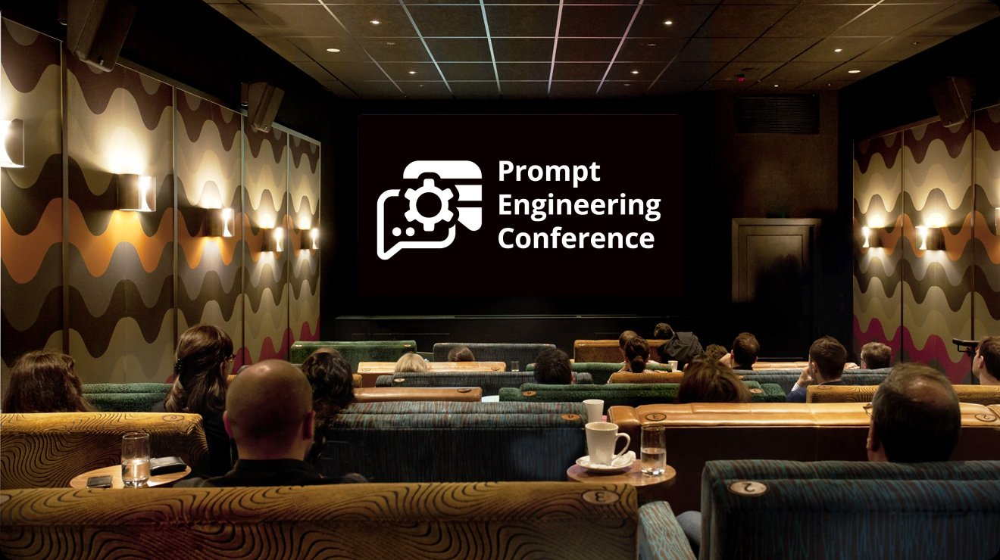
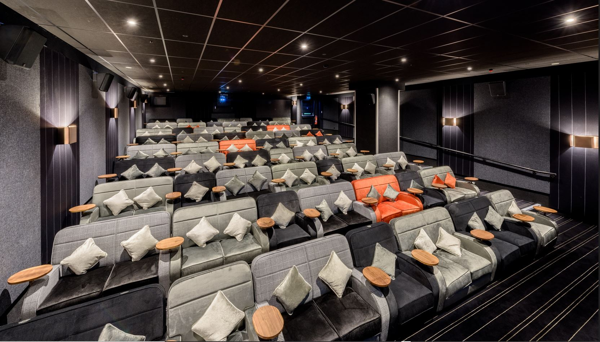
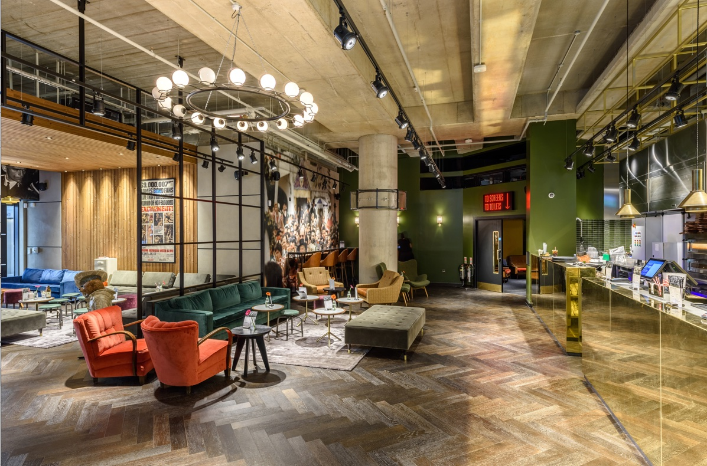

Registration
Main lobby
Please note: For the organization of the in-person Prompt Engineering Conference 2025 in London, we are proud to partner with our trusted colleagues at SREday - the team behind the renowned SREday event series. As part of this collaboration, all ticket sales will be operated by SREDAY LIMITED, a company registered in England and Wales (Company No. 09690643), and will be subject to their Terms & Conditions.
The Prompt Engineering Conference is the world's first event exclusively dedicated to prompt engineering. We are pioneers in this field. Our close connections with top researchers, influencers, educators, and presenters ensure a strong, inspirational, and skill-enhancing experience for all participants.
We firmly believe in the significant and substantial contribution of prompt engineering to the development of AI-infused applications. To introduce this topic as an essential skill for modern developers, or even as a distinct job title, we organized this conference exclusively dedicated to this field.
The Prompt Engineering Conference is open to everyone who wishes to attend, present, and collaborate. Although we dive deeply into prompt engineering, this event is not solely for technical individuals. One unique aspect of this discipline is its accessibility to multiple professions: developers, linguists, data scientists, domain experts, and more—all can become successful prompt engineers.
We believe that 100% (or so) AI-generated sessions will not meet the quality standards we expect. At the same time, we encourage presenters to use prompt engineering to improve their talk proposal and session content.


Crossrail Place,
Canary Wharf,
E14 5AR, London, UK
Level -2
Tube access
Jubilee, Elizabeth and DLR lines: Canary Wharf station


